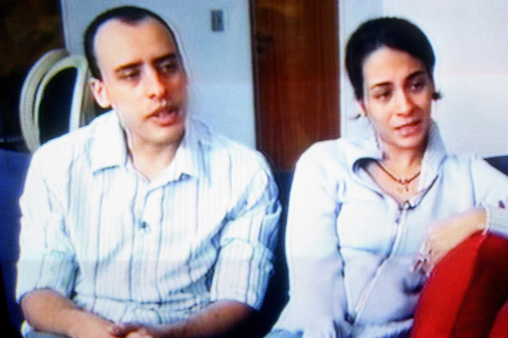

Alexandre Alves Nardoni (pai) e Anna Carolina Trotta Peixoto Jatobá (madrasta).
Na noite de 29 de março de 2008, no Edifício London, na zona norte de São Paulo, Isabella de Oliveira Nardoni
(de 5 anos) foi agredida (sofreu asfixia) e lançada da janela do sexto andar do apartamento, o que resultou em sua
morte.
Inicialmente, o casal alegou que um invasor havia entrado no apartamento. Contudo, a perícia técnica foi deci-
siva ao encontrar vestígios de sangue, demonstrar que a tela de proteção da janela havia sido cortada e identi-
ficar sinais de violência anterior à queda, refutando a tese de acidente ou de invasor e apontando modificação
na cena do crime (fraude processual).
Julgados e condenados pelo Tribunal Juri em março de 2010. Alexandre Nardoni recebeu a pena de 31 anos, 1 mês
e 10 dias de prisão por homicídio (agravado por ser o pai da vítima), somados a 8 meses por fraude processual.
Anna Carolina Jatobá foi condenada a 26 anos e 8 meses pelo homicídio, mais 8 meses por fraude processual. Ambos
cumpriram grande parte das penas em regime fechado em Tremembé, obtendo a progressão para o regime aberto
(Anna Carolina em junho de 2023 e Alexandre em maio de 2024).